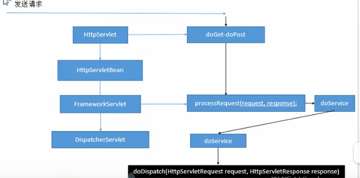

- 1、前端控制器的架构？DispatcherServlet；
- 
doService是一个抽象方法。
2、doDispatch具体细节
核心方法有两个：
（1）处理器的方法被调用，处理器也叫做控制器（controller）

（2）转发到目标页面

doDispatch具体的执行过程：
1.检查是否文件上传请求

2.根据当前请求找到具体哪个controller类能处理

3.如果没有找到哪个处理器能处理这个请求就404，抛异常

4.拿到能执行这个类的所有方法的适配器,名称叫做AnnotationMethodHandlerAdapter

5.适配器执行目标方法，返回值作为视图名，设置保存为ModelAndView中，controller中的目标方法无论怎么写，最终适配器执行完成后都会将执行后的信息封装成ModelAndView

6.根据方法最终执行完成后封装的ModelAndView，转发到对应的页面，而且ModelAndView中的数据可以从请求域中获取


3、getHandler()细节：如何根据当前请求获取目标处理器
getHandler()会返回目标处理器类的执行链；
handlerMapping：处理器映射，里面保存了每一个处理器能处理哪些请求的映射信息。


遍历HandlerMapping：IOC容器一启动创建Controller对象时会自动扫描每个Request Mapping能处理哪些请求，扫描后保存在handlerMapping的HandlerMap属性中。下一次请求过来，就看哪个HandlerMapping中有这个请求映射信息。

4、getHandlerAdapter（）细节：如何找到目标处理类的适配器，因为要拿适配器去执行目标方法

进入getHandlerAdapter()方法：

用到了注解适配器AnnotationMethodHandlerAdapter

5、DispatcherServlet中的九大组件：
SpringMVC在工作时，关键位置都是由这些组件完成的。
共同点：九大组件全是接口，接口就是规范。提供了非常强大的扩展性；
难点：SpringMVC九大组件工作原理。


6.九大组件初始化
DispatcherServlet中有一个onRefresh()方法，是在Spring源码中预留给子类的方法:

DispatcherServlet中的方法：

initStrategies()方法有九大组件的初始化:

可以在web.xml中修改DispatcherServlet某些属性的默认值

总结：去容器中找这个组件，如果找不到就用默认的配置；
有些组件在容器中适用类型找，有些组件使用id找。
7.SpringMVC如何通过反射执行控制器中的目标方法？尤其是参数的不确定？


进入源码调试后到达：


重点
||
||
\ /

执行完findBridgedMethod()方法后返回的执行的方法包含具体的参数：


8.如何确定方法的每一个参数的值，总共有四个参数：

标了注解：
保存是哪个注解的详细信息，进入


没标注解：
（1）是否普通参数（原生API）再看是否Model或者Map


（2）自定义类型的参数没有注解，先看是否原生API，再看是否Model，或者Map，再看是否为其他类型SessionStatus、HttEntity、Errors，再看是否简单类型的属性，比如是否Integer，String等基本类型，如果是paramName="";最后是attrName="";
然后确定自定义类型参数的值，还要将请求中的每一个参数赋值给这个对象


如果attrName是空串，将参数类型的首字母小写作为值，例如Book =》book

SpringMVC确定POJO值得三步：（1）如果隐含模型中有这个key（标了ModelAttribution注解就是注解指定的value，没有就是参数类型首字母小写），直接赋值给目标对象
（2）如果是SessionAttributes标注的属性，就从session拿
（3）如果都没有就利用反射创建对象。